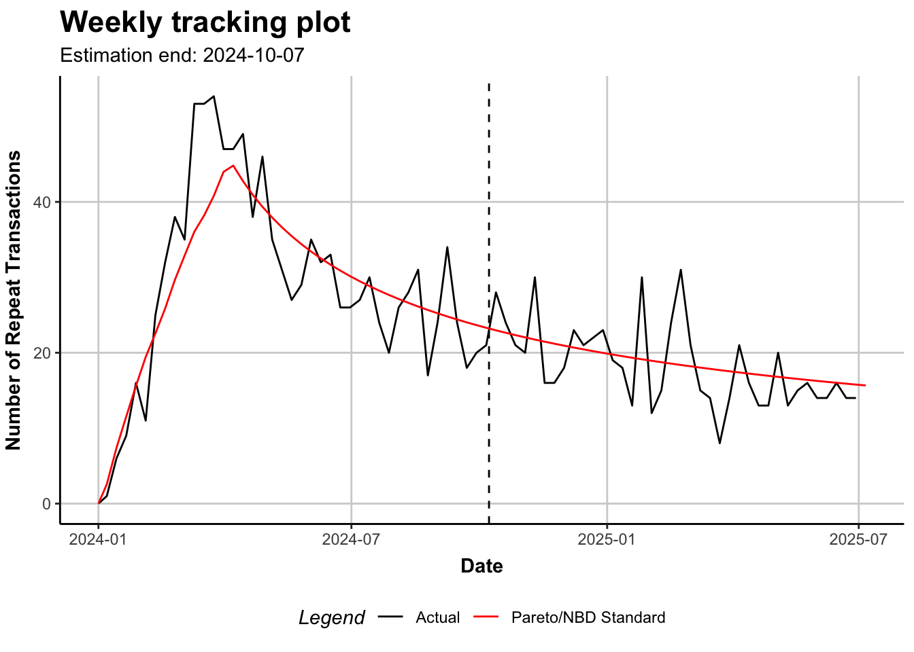

Code
# load packages and dataset (anonymized retailer transaction log)
library(data.table)
library(CLVTools)
dat <- fread("../../data/orders_anon.csv")Modeling churn dynamics with BTYD models
Ray Pomponio
March 11, 2026
In this series of blog posts, I will be visiting some classic marketing concepts from a technical, data-informed perspective. My interest is in developing a better communication style to convey complex, quantitative insights to decision-makers such as marketing professionals. Most practitioners are familiar with customer lifetime value (CLV)–yet the implementation and interpretation of statistical models of CLV are poorly understood. It is my belief (among the many who mentored me) that such models can tell rich stories about customer behavior. This post sets the stage with a basic question for any retail marketing channel: how many customers do we have? In addressing this foundational question, I introduce a class of models known as ‘buy-till-you-die’ (BTYD). I steer clear of any convoluted equations and instead explain the core elements of these models in layperson’s terms–then, I walkthrough a practical example using the free and open source programming language, R. Readers will leave this post with greater familiarity of the capabilities of BTYD models, particularly in estimating churn and in predicting future purchasing behaviors.
Here’s a question that many marketing professionals ponder: How many active customers do we have? The keyword here is active, meaning a customer who is likely to make a future purchase.
Imagine we’re an ecommerce retailer. We’ve historically served thousands of customers, some of whom never made more than one purchase. Do we have any sense of how many customers have churned, or effectively left our business?
Managerial instinct might lead us to define a window, say 6 months, within which any customer making a purchase is considered active. But there’s a problem with this approach: customers don’t all churn at identical rates. Many customers make infrequent, but regular purchases. Others might make irregular, sporadic purchases for a short period of time and then churn immediately (maybe as soon as they find a better deal). Any operational definition such as the 6-month window is too rigid for this kind of consumer behavior.
The problem we faced above is inherent in any non-contractual setting. Here I am using non-contractual to mean the arrangement of a marketing channel that allows purchases at any time. Compare this setting with the contractual setting, for example a Netflix subscription. Even if you are Netflix’s best customer, you only pay for the service once per month, per contract. Moreover, it’s very easy for Netflix to tell how many customers are active–they simply add up the ones who haven’t cancelled their subscription.
Of course, customers can come and go in either setting. But in the non-contractual setting it’s uniquely difficult to tell when a customer has churned. This is where a particular class of probabilistic model proves essential–these are academically referred to as ‘buy-till-you-die’ (BTYD) models.1
BTYD models come in many flavors. Let’s walkthrough a simple example for one customer at an ecommcerce retailer, since this will highlight the essential characteristics of the model. We’ll refer to this individual as “Customer 101”.
Customer 101 makes their first purchase on January 1, 2024–they spent $24. Six months go by, and we still have not heard from Customer 101. But they return to our website and make their second purchase on August 31, 2024–again spending $24–almost nine months later. Between January 1 and August 31, we did not know whether Customer 101 was active, or whether they had churned.
BTYD models offer an intuitive explanation for the phenomenon of Customer 101’s behavior. Imagine Customer 101 flipped a biased coin at the start of every week after January 1, 2024. If this coin landed heads, they would churn and never return to make a repeat purchase. But as long as the coin kept coming up tails (and in this example, we know that it did), Customer 101 would remain active and begin flipping a second coin…
If during the week the second coin landed tails, they would remain dormant and not make any purchases. However, if the second coin came up heads, as it did the week of August 31, then Customer 101 would make a purchase in our marketing channel. The phenomenon of coin-flipping is just a narrative device, meant to illustrate a probability model without requiring much math. But what is important is that Customer 101 operates in an as-if-random manner. With lots of customers and tools from statistics and probability, randomness can be explained in highly convincing ways.
Fortunately, BTYD models are becoming ubiquitous and ever easier to run. Multiple R packages exist for this exact application–an ecommerce retailer wants to turn their transaction log into an estimate of the active customer base.
Below, I present some anonymous data from an ecommerce retailer selling skin care products. The transactions are ordered from the beginning to the end of the 18-month period starting in January 2024.
Next, I want to isolate a cohort of customers who were acquired during the first quarter of the period. This is a component of all BTYD models; we focus on a cohort window and follow every customer until the end of the period. The period should extend well beyond the cohort window. Here’s a summary of our cohort by customer:
The final step of data preparation is to create what is called a clv.data object in the package CLVTools. For more on this package’s utilities, see the open-source GitHub page.2 Data preparation is made simple via a single command:
I mentioned there are several flavors of BTYD models. The flavor I am using is known as the Pareto/NBD model, referring to the underlying probabilitity distributions that govern the churn and purchasing behaviors.3 Below I fit the model and print the four key parameters which will be used in interpretation:
These parameters have direct influences on the underlying probability distributions. Let’s start with churn, which is governed by \(s\) and \(\beta\). The model assumes every customer has their own unique churn propensity, and that they can churn at any time between purchases. When the value of \(s\) is small, as it is in this case, then customers are very heterogeneous with respect to churn propensities. In other words, some customers are quick to churn, but others will endure very long tenures. We can also derive the average churn rate with \(s/\beta\). Based on these parameters, the churn rate is about 0.09.
Once the parameters are estimated, we can begin to interrogate the model for insights about the cohort. Returning to the central question of this post, we want to know how many customers are active. Because the end of the period is halfway through 2025, we might expect a substantial number of customers to have churned by now. The beauty of BTYD models is that we can actually quantify this expectation. Here’s a summary of our cohort at the end of the period:
Original Cohort Size: 5129 End-of-period Cohort Size: 1809.611 Effective Churn Rate: 0.6471806You may be wondering how we went from a whole number of customers to a decimal number–that is simply based on an expected value. Because each customer now has a probability of being active, we sum across probabilities and end up with a decimal (the precise decimal values are unimportant in this context). What we’re really interested in is comparing the size of the active customer base to its original size and calculating churn. The model estimates that effective churn was about 65%, meaning we lost roughly 2 in 3 customers to attrition over the period.
Contrast these estimates with the alternative definition I introduced at the beginning of this post. Let’s say we define the active customer base by those who made purchases within the last six months of the period. Here’s a summary of our Q1 cohort based on that alternate approach:
Alternate Approach to Estimating Churn... End-of-period Cohort Size: 441 Effective Churn Rate: 0.9140183The resulting interpretation is hugely different. Based on our alternative definition, we only expect a few hundred customers to remain active at the end of the period, and churn to be 91%! This is instructive: BTYD models adapt to purchasing frequencies observed in the population, not arbitrarily-defined frequencies. If customers make purchases less frequently than every six months, of course a definition based on this assumption will vastly underestimate the size of the cohort. That is exactly what happened in the alternative definition.
One of the great utilities of BTYD models is their ability to make predictions. Specifically, the model can tell us about the number of expected purchases for customers belonging to our cohort, and we can compare this to actual data:

In Figure 1, we see several trends worth unpacking. First, the average number of transactions grows steadily during the first quarter of the calendar year; this is due largely to customer acquisition. At the end of Q1, our cohort window “closes” and we begin observing churn dynamics. From the start of Q2 through the end of the period, the average number of transactions declines, although the decline is more rapid at first. As customers become inactive, we expect fewer transactions, but the customers that remain by the end of the period are among our most valuable. Earlier I demonstrated how we expect roughly 1 in 3 customers from this cohort to remain active by the end of the period.
It’s important to remember that the company will continue to grow its customer base. Imagine each quarter is a new cohort; we acquire totally new customers in each cohort, which will lead to higher sales. But counting customers is tricky business–it’s not just the sales dollars that are informative. Because every business eventually finds it difficult to acquire new customers, retention should be the focus of any long-term strategy.
In this example, I demonstrated how BTYD models can inform an estimate of churn within a customer cohort, even in a non-contractual setting such as ecommerce or retail. By the end of an 18-month period, about 35% of the original cohort remained active.
But some customers spend more than others, therefore it may be worthwhile to market to short-term customers with high spending tendencies. The best way to evaluate differences across these types of customers is with customer lifetime value (CLV). CLV is in every introductory marketing course, and it sets an important cap on what should be spent in acquiring a new customer. Think of it as a dollar value (either profit, or revenue) placed on a customer.
BTYD models offer a highly granularized picture of customers. Not only does each customer have their own purchasing and churning propensities, but by extension, each customer has a forward-looking CLV. This highly-informative figure can be used to guide many marketing choices. In the next post in this series, I will extend the application of BTYD models beyond churn to include CLV estimation.
The earliest of BTYD models in scientific literature is Counting Your Customers: Who Are They and What Will They Do Next? by David C. Schmittlein, Donald G. Morrison and Richard Colombo (1987). Find it at https://www.jstor.org/stable/2631608.↩︎
The CLVTools Package. https://github.com/bachmannpatrick/CLVTools.↩︎
For more on Pareto/NBD, see the original paper by David C. Schmittlein, Donald G. Morrison and Richard Colombo (1987). See also a very helpful technical note by Peter Fader and Bruce Hardie (2005): https://www.brucehardie.com/notes/009/pareto_nbd_derivations_2005-11-05.pdf.↩︎